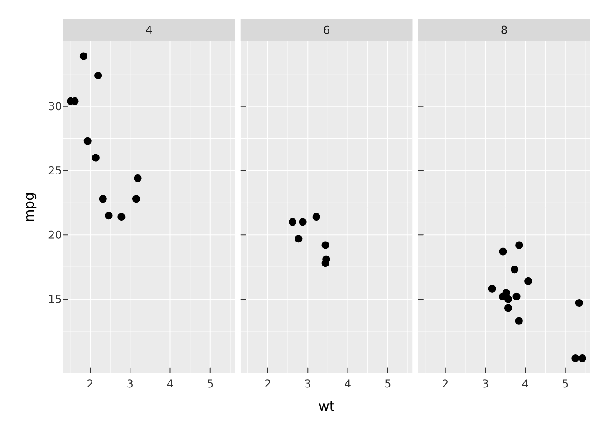
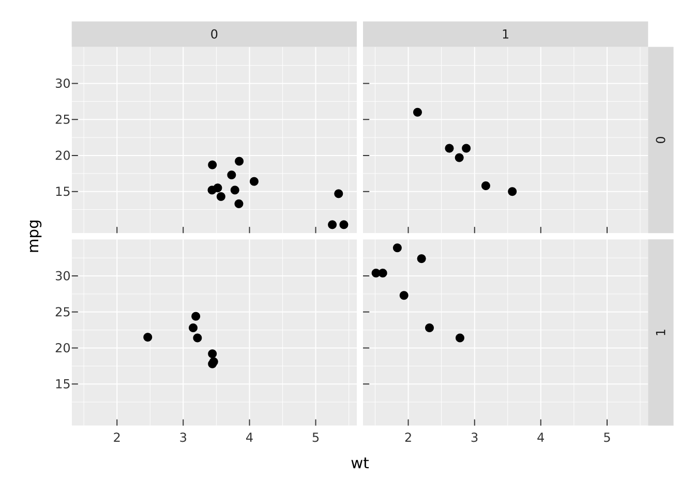
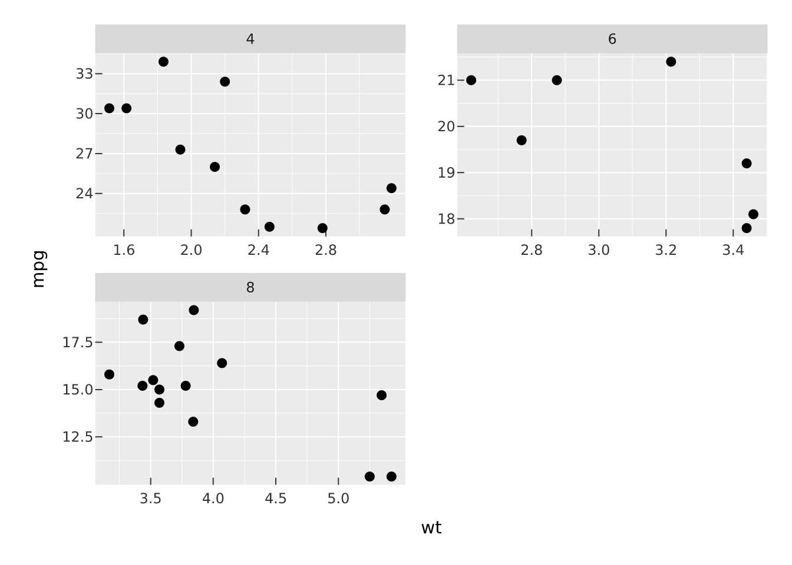
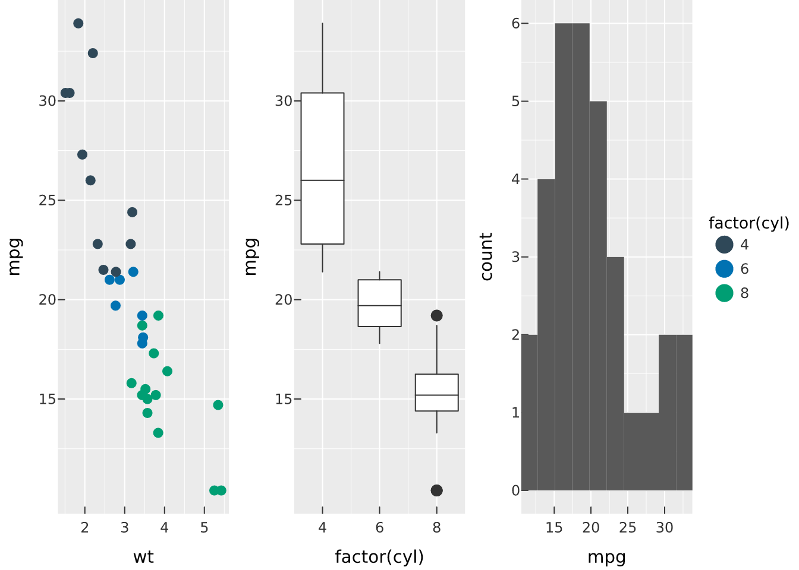
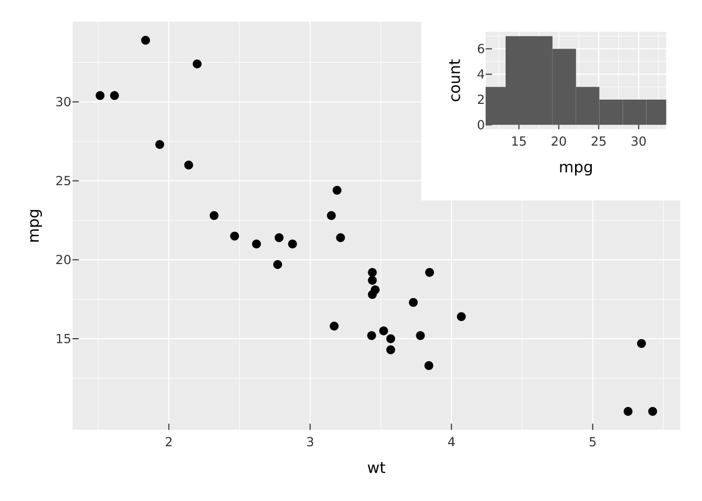

vplot(mtcars) |>
mark_point(x = wt, y = mpg) |>
facet_wrap(~cyl, ncol = 3)
There are two different reasons to end up with a grid of panels, and vellumplot keeps them separate. Faceting takes one plot and splits it by a variable, so every panel shares the same encodings and (by default) the same scales. Composition takes several independent plots, each its own spec, and arranges them into a single figure. Use faceting for small multiples of the same view; use composition for a dashboard of different views.
facet_wrap() lays panels out in a ribbon wrapped to ncol or nrow.
vplot(mtcars) |>
mark_point(x = wt, y = mpg) |>
facet_wrap(~cyl, ncol = 3)
facet_grid() puts panels on a 2-D grid defined by a rows ~ cols formula, which is the right tool when you are crossing two variables.
vplot(mtcars) |>
mark_point(x = wt, y = mpg) |>
facet_grid(vs ~ am)
By default position scales are shared across panels so the axes line up and panels are comparable. When panels cover very different ranges, free them per panel with scales = "free_x", "free_y", or "free".
vplot(mtcars) |>
mark_point(x = wt, y = mpg) |>
facet_wrap(~cyl, scales = "free")
scales = "free_y" is sugar for the underlying resolve_scale() lattice, which lets you set the policy per aesthetic directly. These two are equivalent:
vplot(mtcars) |> mark_point(x = wt, y = mpg) |>
facet_wrap(~cyl, scales = "free_y")
vplot(mtcars) |> mark_point(x = wt, y = mpg) |>
facet_wrap(~cyl) |> resolve_scale(y = "independent")Colour and size scales (and their legends) stay shared across panels, so one legend describes the whole figure.
To place different plots side by side, build each one and combine them. concat() (and its friends hconcat() and vconcat()) arrange plots into a grid; by default they collect the legends into one shared guide.
p1 <- vplot(mtcars) |> mark_point(x = wt, y = mpg, color = factor(cyl))
p2 <- vplot(mtcars) |> mark_boxplot(x = factor(cyl), y = mpg)
p3 <- vplot(mtcars) |> mark_histogram(x = mpg, bins = 10)
concat(p1, p2, p3, ncol = 3)
Control the shape with ncol/nrow, the relative sizes with widths/heights, and irregular layouts with a design string. plot_spacer() drops an empty cell, and wrap_plots() takes a list of plots when you have assembled them programmatically.
inset() floats one plot over another, positioned by fractional coordinates of a reference box. Good for an overview-plus-detail figure.
main <- vplot(mtcars) |> mark_point(x = wt, y = mpg)
mini <- vplot(mtcars) |> mark_histogram(x = mpg, bins = 8)
inset(main, mini, left = 0.6, bottom = 0.6, right = 0.98, top = 0.98)
repeat_() builds a small multiple by repeating one plot template across a set of values, the composition-side counterpart to faceting when you want each panel to be a fully independent plot rather than a shared-scale small multiple.
Faceting and composition also compose with each other: a faceted plot is still a spec, so it can go straight into a concat(). Once your figure looks right, send it to a file the same way as any plot, with render_plot() (see Get started).